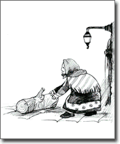

Người đến dự đám cưới khá đông. Ông hàng xóm gọi bác làm công đến và bảo:
- Này, anh đi xem xem có bao nhiêu người đến dự đám cưới bên ấy.
Bác làm công ra đi. Bác để lên ngưỡng cửa một khúc gỗ và ngồi lên bờ tường đợi khách khứa ra khỏi nhà. Họ bắt đầu ra về. Ai đi ra cũng vấp phải khúc gỗ, văng lên chửi và lại tiếp tục đi. Chỉ có một bà lão vấp phải khúc gỗ, liền quay lại đẩy khúc gỗ sang bên. Bác làm công trở về gặp người chủ.

Người chủ hỏi:
- Ở bên ấy có nhiều người không?
Bác làm công trả lời:
- Chỉ có mỗi một người mà lại là bà lão.
- Tại sao vậy?
- Bởi vì tôi để khúc gỗ bên thềm nhà, tất cả đều vấp phải, nhưng cũng chẳng ai buồn dẹp đi. Thế thì lũ cừu cũng làm như vậy. Nhưng một bà lão đã dẹp khúc gỗ sang bên để người khác khỏi vấp ngã. Chỉ có con người mới làm như vậy. Một mình bà lão là người.